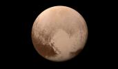

Pluto
Once the ninth planet, Pluto is now classified as a “dwarf planet,” orbiting in the dim outer reaches of the solar system. Despite its small size, Pluto has mountains, glaciers, and a surprisingly diverse geology.
- Distance from Sun: ~5.9 billion km
- Diameter: 2,377 km
- Orbital period: 248 Earth years
- Mean surface temperature: -229°C
- Moons: 5 (largest: Charon)
- Key Feature: Highly elliptical orbit and “heart”-shaped glacier (Tombaugh Regio)
Quick Facts
Pluto's orbit sometimes brings it closer to the Sun than Neptune’s. NASA’s New Horizons spacecraft flew by Pluto in 2015, revealing complex terrain, ice mountains, and possible subsurface ocean. Pluto’s status as a planet is still debated!